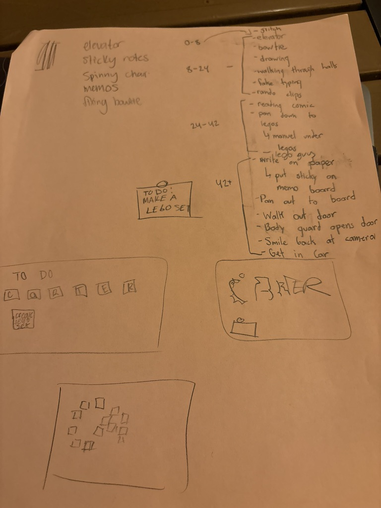
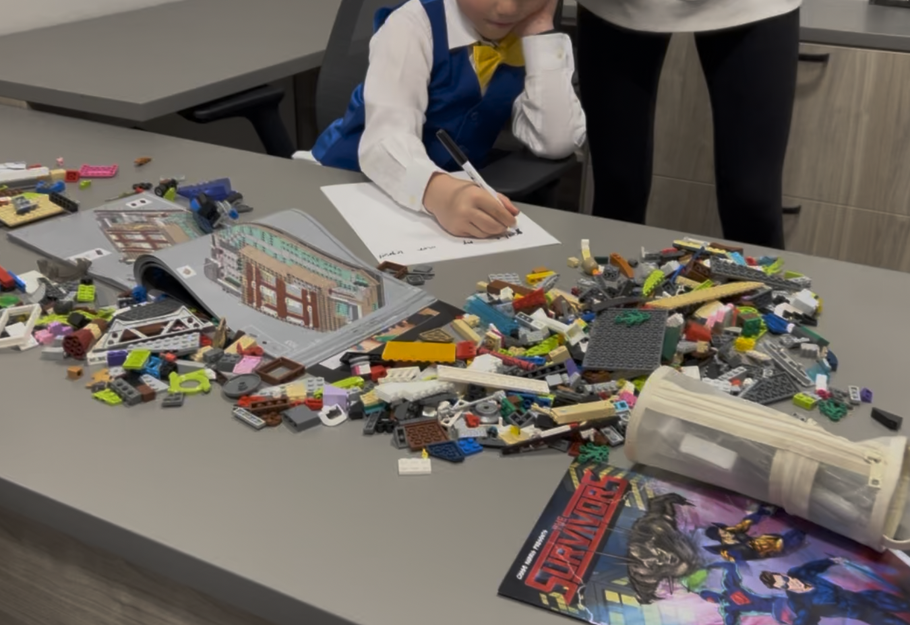
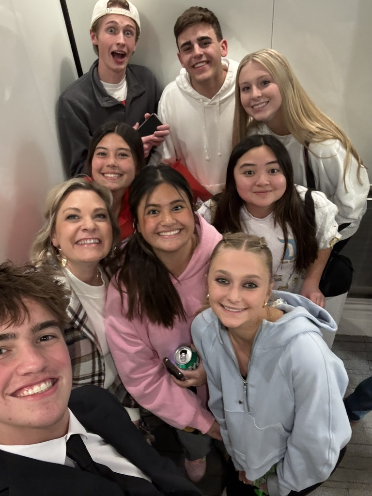
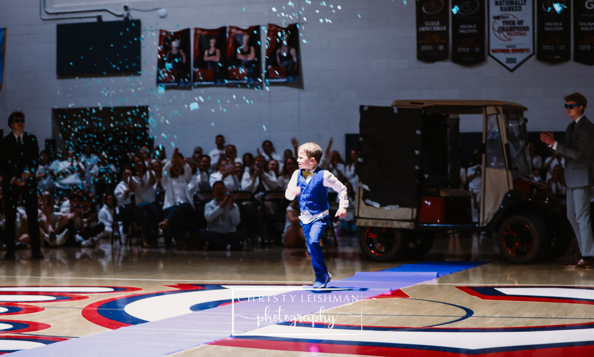
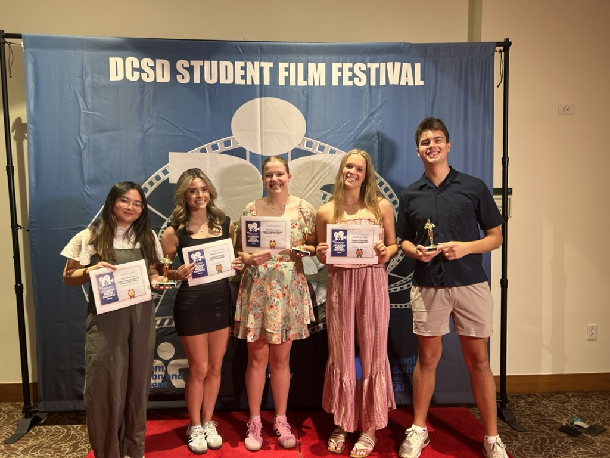

why it mattered
Wish Week is one week of the school year when my high school is assigned a child with a critical illness, builds the whole week around celebrating them, and raises money with Make-A-Wish Colorado to grant their wish. It's run by student government and is a big tradition in Colorado. Each year a committee of project coordinators, six seniors and two juniors, takes on leading the whole project. My peers voted me onto it as a junior and again as a senior.
My senior year was the chance to take what I'd learned over three years and own it. Our wish kid was Carter, whose wish was to design his own LEGO set. That year we raised $124,279.27 and granted 17 wishes.
Within the committees, I led video committee and the opening assembly, and because of my interests I also led branding, the website, the social media campaign, and merch. I'll keep this page about the video. The rest lives on the branding project.
- raised
- $124,279.27
- wishes granted
- 17
- the wish
- create his own LEGO set
the brief
Who the wish kid is and what the theme will be is kept secret from the whole school until the opening assembly. The reveal video is what everyone watches together on the big screen in the gym, holding their breath. It has two halves:
- the recap: gets the room into the Wish Week mood with a lot of love and joy.
- the reveal: slowly shows the theme (colors, theme elements, the hashtag), introduces the kid, and builds hype.
The video also has to end by handing off to what happens next in the room, so I designed it as the first half of a live moment:
my part
I was the director, producer, and project manager on this video. That meant planning the shoot and the shot list, directing on the day, cutting the final video, and keeping the committee on a deadline. We were a team of six, and I had a focus on collaborating, but letting my members still get to own the project. This meant teaching editing skills and collaborating on storyboarding.
finding his location & music
Past years have had themes like Harry Potter and princesses, where the filming location was obvious: you shoot at a castle. This year it took many discussions before we decided Carter's vibe was creative exec. Those discussions also included a pile of music playlists, because we had to find just the right song.
I organized the shoot at my dad's office. We brought LEGOs and bought our wish kid a vest and bow tie in our color scheme, so he looked the part.
making it fun for him
The most important part was that the shoot was fun for him, not tiring or overwhelming, but made him feel celebrated and special. Our wish kid, like most seven-year-olds, was very energetic and got bored quickly, so we made sure to plan our shoot around this fact. We planned the shoot around something we could do with him in 30 minutes (and brought snacks, which unfortunately did make their way into some final shots). The shot list that ran the day is below. It isn't pretty, but it did its job.



designing + building
things working and breaking
The shoot ran smoother than expected, and we got pretty much all the shots we wanted, plus a couple extra. We did run into a slight hiccup where a clip revealing his wish said "make my own LEGO set", but for branding it should have said "create my own LEGO set." I had to film this clip again afterwards, but it ended up better, and was more legible anyway.
telling the his story
You also might notice, we don't go into detail about why he is a Make-A-Wish kid. We never felt like there was a need to do so. The video's goal is to introduce him: his smile, his joy, his wish. That's it.
reveal day

The video ended with a body guard opening up the car door at the school. In the gym where that video was shown, we drove him in on a golf cart with blacked out sides and parked in the middle of the floor. "Bodyguards" in suits opened the door, and Carter ran down a blue carpet while confetti poppers went off!
the award
We submitted the video to a district video competition, and it won an award for "Best Live Event Coverage" at the Douglas County School District Student Media Awards 2025.

continuous improvement
The shoot ran smoothly overall, and so did the editing process. In the end, I might have preferred we use different cameras and also have bought some stabilizers for our phones. The video does have out of focus clips and shaky clips. Additionally, not everybody at the shooting was a part of the storyboarding, only my team, so we ended up not being as efficient as we could've been that day. In the future I should brief everybody, not just my team, what the plan is.
- tools
- filming on Canon EOS Rebel t7 and iPhone. editing with Final Cut Pro and CapCut
- timeline
- spring 2025, over three months
- role
- director, producer, project manager
- event
- wish week, for Make-A-Wish Colorado
- status
- complete · district student media awards winner